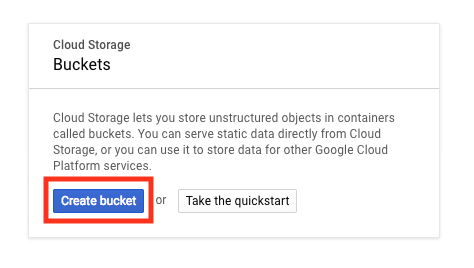
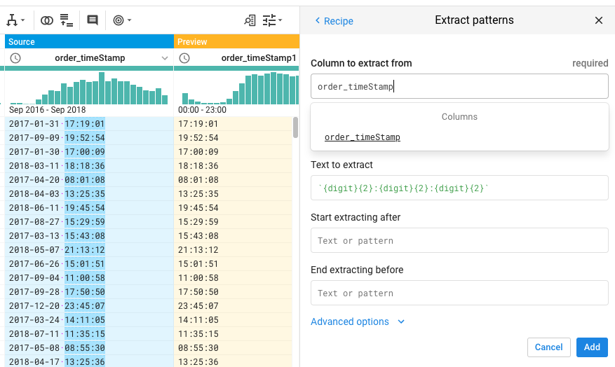
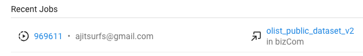

In this series of labs, you will go through the full analytics life cycle of taking data through the {Ingest → Store → Transform → Analyse} life cycle. We will do this using our own GCP accounts.
What you'll build
- A full life cycle Analytics Project
- Ingest → Transform → Store → Analyze
In this project, we will use Ecommerce transactions data from a Brazilian online marketplace - olist.com. The purpose of using this data set is to get a taste for what analytics is like in a business setting. At 100K transactions, This is not as big a data set as the Detroit 9-1-1 data set which had over a million records. However, the purpose of this project is to get a sense for analytics in a business context. We can follow the same set of steps for a dataset with billions of transactions, such as from amazon.com, and we would not need to change anything in our work flow. The steps and tools we follow in this series of labs will enable us to do analytics even if the records run into the billions. The GCP tools we will be using are: Cloud Storage, Data prep, BigQuery, and DataStudio.
What you'll learn
- Doing analytics in a business context
- Ingest, handle, transform and move Big Data in GCP
- Cloud Storage, Data prep, BigQuery, and DataStudio.
What you'll need
- A recent version of Chrome. Note, this works in other browsers as well, but this case is built using chrome.
- Enrolled in the free Google GCP credits.
- Preferably Enrolled using a Gmail ID.
- Reasonably fast and stable internet connection
This data set consists of ecommerce transactions on a Brazilian We will start off by logging into the Google Console.
This is a Brazilian ecommerce public dataset of orders made at Olist Store. The dataset has information of 100k orders from 2016 to 2018 made at multiple marketplaces in Brazil. Its 21 supportive features allows viewing an order from multiple dimensions: from order status, price and freight performance to customer location, product attributes and finally reviews written by customers.
This is real commercial data, it has been anonymised, and references to the companies and partners in the review text have been replaced with the names of Game of Thrones great houses.
Context
This dataset was generously provided by Olist, the largest department store in Brazilian marketplaces. Olist connects small businesses from all over Brazil to channels without hassle and with a single contract. Those merchants are able to sell their products through the Olist Store and ship them directly to the customers using Olist logistics partners.
After a customer purchases the product from Olist Store a seller gets notified to fulfill that order. Once the customer receives the product, or the estimated delivery date is due, the customer gets a satisfaction survey by email where he can give a note for the purchase experience and write down some comments.
Attention
- Note that a comment may be repeated if an order has two or more different products.
- An order may also be fulfilled by more than one seller if the customer purchases mor than one product.
- All text identifying stores and partners where replaced by the names of Game of Thrones great houses.
Datasets
We are releasing two independent datasets intended for different types of studies. Each row in those datasets corresponds to a customer order, product and review.
Unclassified Orders Dataset
This dataset includes 100k rows and 21 feature variables. Each row in this data set represents a single transaction on the Olist.com ecommerce website.
olist_public_dataset_v2.csv
Category Name Translation
Consists of 71 rows and 2 columns. Translates the product_category_name from Portugese to english. product_category_name_translation.csv
Acknowledgements
Thanks to Olist for releasing this dataset.
We will start off by logging into the Google Console.
Log in to Google Cloud Console
Type in console.cloud.google.com in your browser.
Log in using the email account with which you signed up for free GCP trial credits.
Click on Next.
Google Cloud Console shows up as below:
Ensure you are logged in with the correct account by clicking on user icon on top right.
The first step in any Google Cloud project is to create or select a gcp project under which we will execute the analytics project. I will use the same project Detroit911 to execute the bizcom project as well since I have run out of my quota of number of new projects I can assign to my free GCP billing account.
Go to Google Cloud Platform Console home page and make sure that Detroit911 is selected in the Project drop down.
Make sure you select this new project. If successfully selected, its name will show up in the projects dropdown as shown in screen-shot below.
In the next lab, we will start off by ingesting our data into the GCP platform.
There are many different services that allow you to store data into GCP. We will start by ingesting our data into Google Cloud Storage as it is one of the cheapest options.
Create a Storage Bucket on Google Cloud Storage
In the Console, go to Navigation menu > Storage > Browser > Create Bucket.

Name: Enter a unique name for your bucket.
Bucket naming rules:
- Do not include sensitive information in the bucket name, because the bucket namespace is global and publicly visible.
- Bucket names must contain only lowercase letters, numbers, dashes (-), underscores (_), and dots (.). Names containing dots require verification.
- Bucket names must start and end with a number or letter.
- Bucket names must contain 3 to 63 characters. Names containing dots can contain up to 222 characters, but each dot-separated component can be no longer than 63 characters.
- Bucket names cannot be represented as an IP address in dotted-decimal notation (for example, 192.168.5.4).
- Bucket names cannot begin with the "goog" prefix.
- Bucket names cannot contain "google" or close misspellings of "google".
- Also, for DNS compliance and future compatibility, you should not use underscores (_) or have a period adjacent to another period or dash. For example, ".." or "-." or ".-" are not valid in DNS names.
Storage class: Regional
Location: Uscentral1
Once you've gotten your bucket configured, click Create:
,

Enter bucket name > Select MultiRegional > Click Create.
New bucket called olistdata created under project Detroit911.
This bucket is now ready to store data. In next step we will get our data on our local computer.
Download data on a local computer
Download these CSV files which contains the olist transactions data and store it locally on your computer.
Transactions Data Set →
Product Category English Names →
Ingest Data into Google Cloud Storage Bucket
Drag and drop this file from your computer into the cloud storage bucket.
That's it — you've just moved your data file from local computer and stored it in the cloud in a Cloud Storage bucket!
Now that you have ingested data into GCP, we will transform it using Data Prep.
In this lab, we will use Data Prep to clean up and transform the data and prepare it for analysis.
Start Cloud Data Prep
> Big Data > Dataprep > Click on
If you have already used Dataprep on this project earlier (which you should have if you did the GCP(g) project, then you will see a screen similar to the following:
IF you have not used Dataprep on this project earlier, then you will be asked to accept a series of terms and conditions. Accept them as shown in the following few screenshots.

This step might take some time to complete.


Create a New Data Flow
Click on flows icon - in left hand side menu bar. Flows you have created till now are listed.
Click Create Flow

Click Create
Add a Source Data Set to Flow
Click Add Datasets
Click Import Datasets
Select GCS → Click on bucket: olistdata
List of files available in olistdata bucket is displayed.
Click on against both data sets.
Datasets are now previewed on right hand pane.
Click Import & Add to Flow
A Dataflow with both csv files are displayed. Details of data is also displayed in the Details pane on right.
Add A Recipe to Join The Data Sets To Get English Descriptions
Click on olist_public_dataset_v2.csv in panel → Click on Add new Recipe
Click Edit Recipe
Select Join [] from menu of operations at top.
Select product_category_name_translation.csv from list of data sets. → Click Preview
Fields in both tables are displayed as below:

Click Select Join Keys
Data Prep automatically selects the keys on which the two tables can be joined.
If the join fields selected are not what you want, you can always edit it here. In this case, the selection is correct for us.
"Product_category_name" field in "olist_public_dataset_v2" file = "Product_category_name" field in "product_category_name_translation" file
The fields in "product_category_name_translation" file are renamed to column2 and column3 to avoid any confusion with any similarly named fields from "olist_public_dataset_v2" file.
Now, click on Edit Settings to make a few changes → Change column name prefix of joined in file to "tbl2_" → Check always include all columns in selection checkbox

Scroll down to bottom of list of columns to ensure that the second column from joined in table is also included in joined table.
Now carefully inspect the PREVIEW pane.

At the top, the details provide you the following information:
- The Input rows came from file "olist_public_dataset_v2"
- Dataprep picked a sample of 26,498 records from the 100K records for preview purposes.
- The joined in records came from file "product_category_name_translation"
- Dataprep used all records = 71 from this joined in table.
- The number of input rows were same as no. of output rows = 26,498.
Looking at the column names reveals that the column2 field from joined in table has been prefixed with "tbl2_" as we had specified.
If we scroll to the extreme right of the preview, we find the column tbl2_column3" which is the English name translation for the Portugese product categories.
The Preview looks all good! So click on Add to Recipe
You will notice that the result now has 27 columns instead of 25. The two additional columns from the translation file have been added.
Add Steps to Recipe to Rename and Drop Columns
Scroll to right most column:
Click on tbl2_column3 → Click on Rename → Click Edit → Change name of column to CatEnglish → Click Add
product_category_name_translation
Scroll back to left most column:
Click on tbl2_column2 → Click Add on Delete Column
Review the Recipe pane. Till now we have joined the tables, renamed one column and dropped another column.
Now, if I am leading the data mining team at olist, I would like to take a pause and think about who my end customers are and how might they use this information to improve the quality of their decisions. Some of the possible end customers seem to be:
- Marketing team which may want to see the top selling categories, products etc.
- Human resources team which might want to see what days of the year, month and week and what times of the day do products sell the most so they can align their hiring practices to match up with the ups and downs of order volumes.
- Operations and supply chain team which might use the same information as in #2 above to align resources such as trucks and warehouse capacity to flex according to need.
- Advertising team which might want to use the same information as in #2 above, to modify my advertising messages , coupons and discounts to align with the peaks and troughs of demand.
- Pricing strategy team which might want to use the same information as in #2 above to decide how to change price strategically through different time periods.
There can be many other decisions that different stakeholders might be interested in looking at.
Now, we want to ensure that in our dataset, we have all the fields that we might need to use as "Metrics" or "Dimensions" to create analysis that supports such organizational decisions.
In our current data set, one of the dimensions that is not clearly separated out is date, time of day, day of week, day of month and so on.
In the next set of steps, we add steps to our recipe to extract these values from the different timestamp fields - example the "order_purchase_timestamp" field.
[Note: If you are wondering how these timestamp fields get generated, think of when you are checking out of a Walmart (ok, out of a Louis Vuitton - I've never been into one, but may be no self-checkouts in that store?) → At the time you scan the barcode of the item while checking out, a timestamp is automatically recorded into a field in a database table of Walmart's IT system. Similar timestamps are recorded when your credit card is processed and so on.]
Add Steps to Recipe to Extract Date and Time Values from TimeStamps
If in the process of massaging the data in the preview pane, the recipe steps have disappeared from the right hand pane of your screen, you can get it back by clicking on the bulleted list icon as shown in screen below.
Click on Split icon [ ] on top menu list of transformations → Choose column order_purchase_timestamp to split → Specify to split at position 19 → Click Add
We are splitting at 19, since once we remove the trailing digits at the end, DataPrep recognizes the resulting field as a date time value (as you will notice with the clock icon beside the resulting column).
Delete the column with trailing digits
Rename order_purchase_timestamp1 to order_timestamp.

Next click on the Extract icon[] to extract the time field from the order_timeStamp field using as shown below. This extraction happens by specifying the pattern of the text to be extracted. Click on Add

Rename the extracted time field to order_time → Click on Add.
Next Extract fields such as year , day of month etc. from these fields. Below is set of steps that you need to add to your recipe to get these values.
Apply the same treatment as above in steps 4-12 to the field → "order_delivered_customer_date"
Your recipe should now consist of the following steps:
Calculate Delivery Time for Each Order
We will now add a step to calculate the time taken for delivery for each order. We will do this by subtracting the time of delivery from the time the order was placed.
Click on Functions icon [] from top menu of transformation functions → Select Dates and times → Select DATEDIF (DATEDIF calculates the time between two dates)
In the right pane enter the dates as shown below and name the newly calculated field as LeadTime → Click on Add.
Finally Your Recipe Should Look As Follows. Review to ensure it does → Click Run Job
Store Resulting Data in Big Query
We want to store the data generated from the Recipe into Big Query. To do this, Click Add Publishing Action →
Select BigQuery → Select Database DPD_911data →
(Note: The DPD_911 data set was created in Big Query as part of the GCP(g) tutorial, so we do not need to create a separate one here. Check out GCP(g) for how to create data sets in Big Query)
Select Create a new table → Enter table name as olist_analyticsData → Select Drop the table every run → click Add
Run the Recipe
Till now we have been simply creating the recipe, not actually transforming the whole data set. The data that has been displayed is a sample and not the full data set. In a sense, we have been prototyping what we want to do with our data set. In the next step, we run our recipe on our full dataset by clicking on "run job".
This job will take some time because we are applying multiple transformations to our data. In my case, it took around 20 minutes. Let the job run. Once completed, the job status will change from in progress to completed.
Click Run Job → The job starts running
The job may run for a bit as significant data massaging is occuring in the background. You may want to take a break here and come back after a bit.
You can also check for status of job by clicking on the jobs icon [ ] on left hand side menu.
It took 11 minutes for me to run this job.
View the Recipe Report
You can view a report on the recipe by clicking on the job ID in the list of jobs. In my case the job ID was 969611. I click on it and it gives me a detailed report on all the transformations and results that were generated as part of the job.

Here is a screen shot of the report.
Review Data in Big Query
Since I selected creation of a new table in Big Query as the publishing action for this job, I should see that table in BQ. Go to Big Query in GCP Console to ensure that the table has been created.
Go to Home of GCP Cloud Console → Browse to Big Query Web UI → Make sure the correct project is selected (Detroit911) → Click on Resources → Click on Data set DPD_911data → Click on olist_analyticsData table
Review the Details to ensure that you can see the Data table in Big Query has all the data that you expect it to have.
Click on Schema to review the table schema.
- I can see that all 100,000 records came through from the files into this table.
Click on Preview to see sample data in the table.
Thus now the data is available in Big Query in table "olist_analyticsData", inside data set "DPD_911data".
Till now we have completed importing data, transforming data and storing it in Big Query. In the next step, we will use this data in Big Query to do analytics in Data Studio.
Now that we have the data in Big Query, we can use Data Studio to visualize and run analytics on this data set.
Independent Assignment Work
Imagine that you are leading the data science team at olist. You have been tasked by the CEO to leverage analytics to enable better decision making across the organization. The CEO has indicated that he will fund growing the data science team but he needs to be convinced of the ability of the data science time starting with you. The olist CEO is the founder and a highly technology oriented guy. He believes that people who run technology teams should be strong technically themselves to be effective.
You had this meeting Friday evening and you wake up early morning on Saturday thinking about a plan of action. You sit down in your study with a blank sheet of paper and close your eyes, deep in thought.
Suddenly your thought veers towards the data mining class you had taken at Wayne State. In the first half of the class you had learnt the business aspect of data mining and in the second half you had done the technical side. Fortunately, you had been very diligent through your business degree and had stored all the course materials. One of the course materials was a detailed tutorial that walked you through the steps of a full life cycle analytics project. You had also learnt about different frameworks to execute analytics projects.
You pull out all those materials together and slowly a plan of action emerges. You jot down your plan on the blank sheet of paper.
Here is the plan you layout on the blank sheet of paper:
- Identify five key decisions that can be enabled by the data set at hand.
- For each decision:
- Provide a layman description
- Department(s)
- Stakeholder(s)
- Design a layout of the report
- What are the dimensions and metrics that you will report on.
- What is the type of chart you will use (timeline, pie, bar graph etc.)
- Use GCP Data Studio to create these five reports.
- Create each report on a separate tab in Google Studio
- Share the Data Studio report with your CEO. His email is ajitsurfs@gmail.com
You can collaborate with your colleagues in working on this project. However, the work should be done independently by you and shared with me by you. Also, please make sure that your work is not a duplicate copy of someone else's work.
Best.